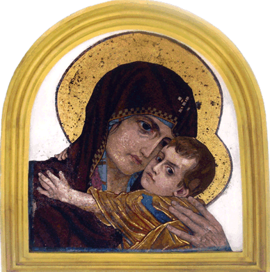

Главная
Расписание и календарь
История прихода
Первый приходской храм
Из истории возведения Покровского храма
Установка мозаик
Покровский храм сегодня
Мозаики собора
О Тебе радуется
Господь Вседержитель
Богоматель с ангельскими чинами
Собор Архистратига Михаила
Спаситель с предстоящими
Спаситель с донатором
Святитель Алексий Московский
Преподобный Иосиф Волоцкий
Покров Богородицы
Нерукотворный образ
Молитвослов
Утрение молитвы
Вечерние молитвы
Три канона
Правило ко причащению
Благодарственные молитвы после причастия
Воскресная школа
Расписание занятий
Наша жизнь и успехи
Маленьким для школы
Маленьким для школы
Эта страница находиться в разработке